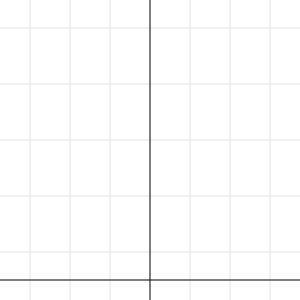

Діаграма популярності браузерів 2017–2021Browser popularity 2017–2021
2017
2018
2019
2020
2021
Chrome Firefox Opera ІншіOther
БуквицяDrop cap
Всесвітня мережа Інтернет — це система об'єднаних комп'ютерних мереж. Веб-сторінки створюються мовою HTML, а їхній вигляд задається за допомогою CSS. Перша літера цього абзацу оформлена як буквиця через псевдоелемент first-letter.
The Internet is a worldwide system of connected computer networks. Web pages are written in HTML and styled with CSS. The first letter of this paragraph is a drop cap made with the first-letter pseudo-element.
Ефект морської хвиліSea wave effect
NIKITA
VOROBIEI
Графік функції y = x²Graph of y = x²

x
y
0